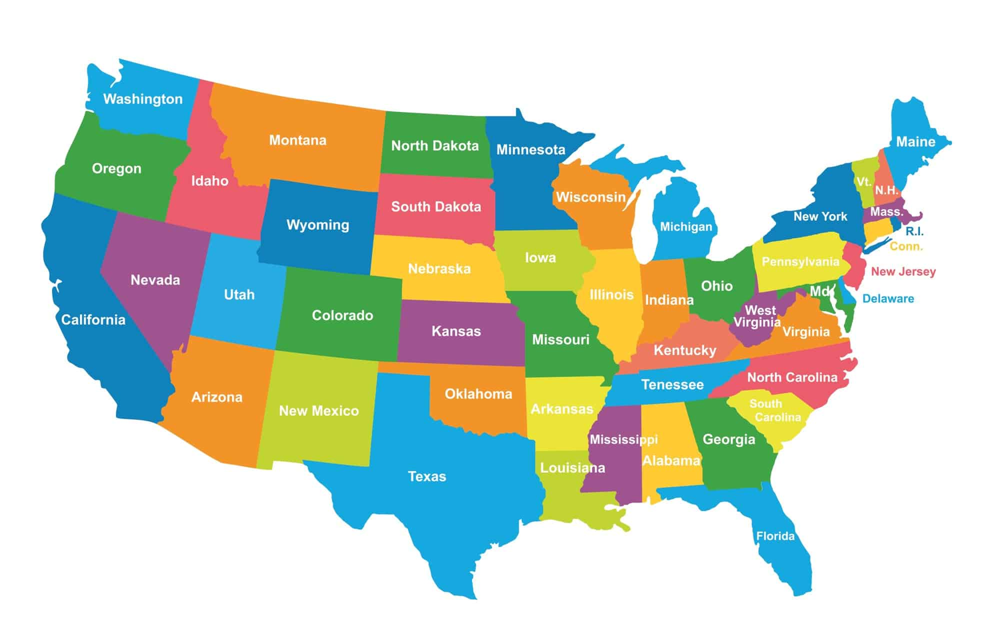
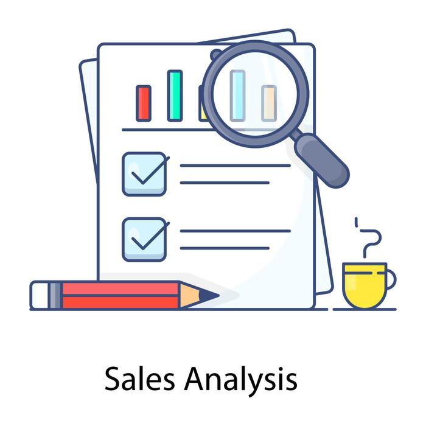

This project presents an end-to-end healthcare data analysis workflow using Excel, MySQL, and Power BI, focusing on patient engagement, revenue performance, and operational insights across U.S. states.
The analysis explores how patient behavior, appointment outcomes, and financial performance vary by state, department, and doctor.


This project analyzes pharmacy inventory and sales data to generate actionable insights using MySQL and Power BI. It focuses on tracking revenue performance, monitoring stock levels, and identifying risks such as low inventory and expiring medications.
This project analyzes hospital patient data to identify key factors contributing to 30-day readmissions. The goal is to uncover trends in patient demographics, diagnoses, and treatment patterns, and provide data-driven insights to improve patient outcomes and reduce readmission rates.
This project analyzes healthcare appointment data to identify no-show patterns, revenue loss, and operational performance.
An end-to-end data analytics project examining 1,500 lung cancer patients across 6 WHO regions (2015–2025), covering data cleaning, SQL querying, Excel modeling, and Power BI dashboard design.
End-to-end data analytics project covering data cleaning in Excel, SQL analysis in MySQL, and an interactive Power BI dashboard — built on a real-world hospital patient flow dataset.
This project analyzes retail sales data using MySQL to uncover insights about customer behavior, product performance, and revenue trends. The dataset was cleaned in Excel and imported into a relational database. SQL queries were used to perform joins, aggregations, and segmentation.

This project simulates a complete data analyst workflow: cleaning and exploring data in Excel, querying a relational database with MySQL, performing exploratory data analysis and visualization in Python, and building a one-page interactive dashboard in Power BI.
This project presents an end-to-end Data Analytics solution designed to analyze airline operations, passenger traffic, flight performance, and revenue generation. Using a dataset of 5,000 flight records, I performed data analysis across multiple tools including Excel, MySQL, Python, and Power BI to identify key business insights and create an interactive executive dashboard. The objective was to simulate a real-world airline business scenario and demonstrate practical data analytics skills that support data-driven decision-making.